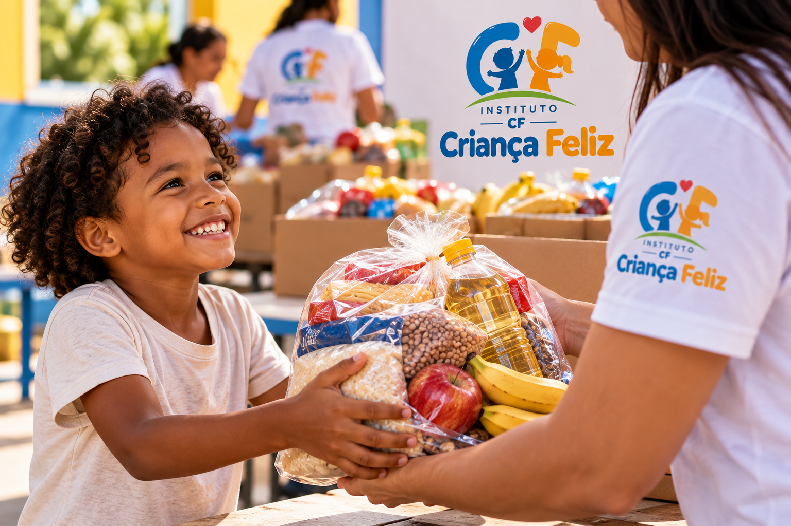

Projeto Alimentação

O Projeto Alimentação realiza ações de arrecadação e distribuição de alimentos para crianças e famílias em situação de vulnerabilidade.

O Projeto Alimentação realiza ações de arrecadação e distribuição de alimentos para crianças e famílias em situação de vulnerabilidade.
O Projeto Educação promove atividades educacionais, apoio escolar e oportunidades de aprendizagem para crianças e jovens.
As doações ajudam a manter os projetos de educação, alimentação e assistência desenvolvidos pelo Instituto CF.
Pessoas e empresas podem contribuir para que mais crianças sejam atendidas pelas ações do instituto.
O Instituto CF também recebe pessoas interessadas em participar voluntariamente das atividades e projetos sociais.
Para demonstrar interesse em participar, realize seu cadastro.
Quero ser voluntário